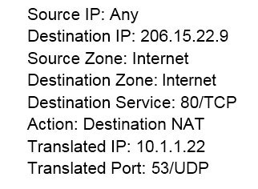
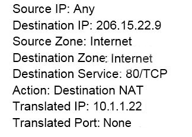
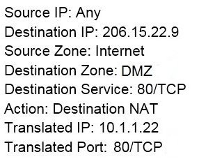
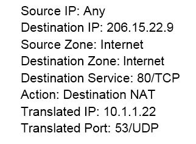
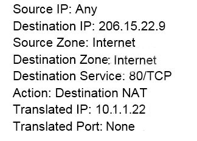
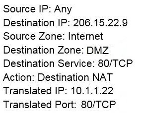

Which CLI command is used to simulate traffic going through the firewall and determine which Security policy rule, NAT translation, static route, or PBF rule will be triggered by the traffic?
Answer Choices
- A. check
- B. find
- C. test
- D. sim
Suggested Answer: C
Top Highly Voted Comments
Upvotes: 3
test nat-policy-match
Upvotes: 3
Final Answer : C
Views: 0 | Replies: 0

 







C is correct